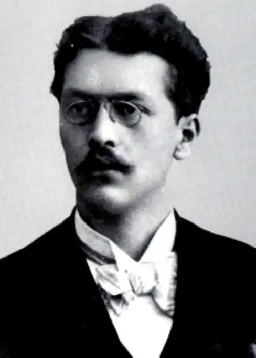

Богдан Амброзійович Нижанківський (1909-1986) – український поет, прозаїк, гуморист. Псевдонім – Бабай. Народився 24 листопада (за іншими даними – 24 лютого) 1909 року у місті Золочеві (Західна Україна) в родині актора Амброзія Нижанківського. Закінчив комерційну школу в Львові (1929), працював у спілці кооперативів "Центросоюз". Працював репортером. Був активним членом групи "Дванадцятка".
Під час німецької окупації працював в "Українському видавництві", очолював львівське бюро газети "Краківські вісті" (1942-1944). Емігрував у роки війни, перебував у таборі Ді-Пі в Берхтесгадені (Німеччина), брав участь у літературному і театральному житті. Редагував разом із З. Тарнавським тижневик "Українська трибуна" (Мюнхен), завідував відділом літератури і мистецтва.
У 1949 р. емігрував до США, поселився у Детройті, працював на фабриці. Створив "Клуб мистецького слова". Автор поетичних збірок "Терпке вино" (1942), "Щедрість" (1947), "Вагота" (1953), "Вірші іронічні, сатиричні і комічні" (1959), "Каруселя віршів" (1976), "Марципани і витребеньки" (1983); збірок оповідань і нарисів "Вулиця" (1936), "Актор говорить" (1936), "Новели" (1941), повісті "Свято на оселі" (1975). Помер 18 (за іншими даними – 19) січня 1986 р. у Детройті.